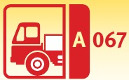
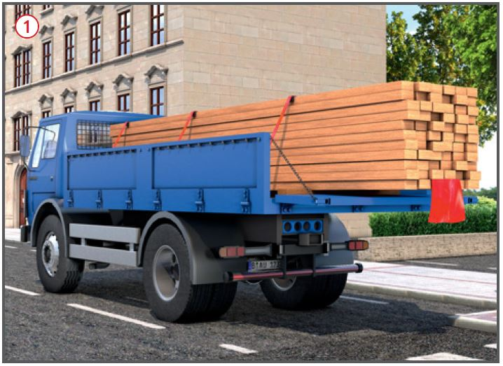
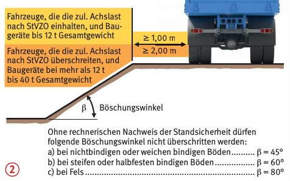
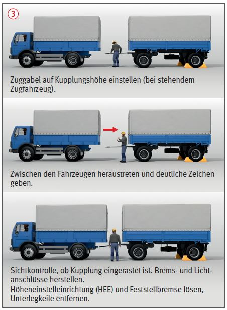

Kraftfahrzeugbetrieb
|

|

Gefährdungen
- Durch mangelhaften Zustand
der Fahrzeuge, mangelnde
Eignung oder Fehlverhalten der
Fahrzeugführer kann es zu
Unfällen im Straßen- und Baustellenverkehr kommen.
Allgemeines
- Fahrzeuge mindestens einmal
jährlich durch eine "zur Prüfung befähigte
Person" auf betriebssicheren
Zustand prüfen lassen. Regelmäßige Untersuchungen des
Fahrzeuges nach StVZO durch
Sachverständigen (z. B. TÜV,
DEKRA) veranlassen. Mängel am
Fahrzeug dem Unternehmer
sofort melden.
- Im Fahrzeug nur so viele
Personen befördern, wie im
Fahrzeugschein angegeben und
Plätze vorhanden sind. Für jede
Person ist eine Warnweste mitzuführen.
- Beförderung von mehr als 9
Personen (einschl. Fahrer) nur mit gültigem Personenbeförderungsschein.
- Fahrzeug muss für die Transportaufgabe geeignet sein.
- Bei Fahrerlaubnis-Inhabern der Klassen C, CE sind in 5 Jahresabständen Untersuchungen nach der Fahrerlaubnisverordnung (FeV) erforderlich.
Schutzmaßnahmen
- Vor Antritt der Fahrt beachten:
- Fahrzeug auf betriebssicheren Zustand kontrollieren, insbesondere Bremsen, Beleuchtung, Warneinrichtungen, Reifen. Fahrt nicht antreten, wenn Mängel vorhanden sind, die die Betriebssicherheit gefährden.
- Vorhandensein von Warnweste, Warndreieck, Warnleuchte und Verbandkasten kontrollieren.
- Sicherheitsgurt anlegen.
- Auf Mitfahrer einwirken, die Sicherheitsgurte anzulegen.
- Ladung auf der Ladefläche mit Zurrmitteln
 o. Ä. so sichern, dass sie nicht kippen, verrutschen oder herabfallen kann.
o. Ä. so sichern, dass sie nicht kippen, verrutschen oder herabfallen kann.
- Zurrmittel nur an tragfähigen Zurrpunkten befestigen.
- Zurrmittel nicht überlasten und nicht knoten. Beschädigte Zurrmittel, bzw. Zurrmittel ohne Kennzeichnung bzw. mit nicht mehr lesbarer Kennzeichnung aussondern.
- Zurrgurte nicht über raue Oberflächen oder über scharfe Kanten ziehen. Kantenschoner bzw. -gleiter verwenden.
- Spann- und Verbindungselemente von Gurten und Zurrmitteln nicht über Kanten führen.
- Bei Instandsetzungsarbeiten im Gefahrbereich des fließenden Verkehrs Warnkleidung tragen.
Zusätzliche Hinweise für LKW- und Anhängerbetrieb
- Bei Rückwärtsfahrt mit unzureichenden
Sichtverhältnissen
nach hinten einen Einweiser
beauftragen. Einweiser müssen
sich im Sichtbereich des Fahrzeugführers
aufhalten und Warnkleidung
tragen.
- Beim rückwärtigen Heranfahren
an Bodenvertiefungen (z. B. Gräben) Anfahrschwelle auslegen.
- Ausreichenden Abstand von
Gräben und Böschungen einhalten
 .
.
- Beim Transport gefährlicher Güter, das Gefahrgut gut sichtbar kennzeichnen und die maximal zulässigen Mengen nach dem ADR beachten. Bei Überschreitung der Kleinmengenregel (1000 Punkte-Regel) sind weitere Anforderungen zu erfüllen.
Sicherheitsabstände von Fahrzeugen, Baumaschinen oder Baugeräten bei nicht verbauten Baugruben und Gräben mit Böschungen


- Die Ladung seitlich nicht über die Begrenzung der Ladefläche und nach vorne nicht über das Fahrzeug hinausragen lassen. Ab 2,50 m Höhe ist ein Überstand von maximal 0,50 m zulässig. Nach hinten darf die Ladung überstehen: Bei Fahrten bis 100 km Entfernung höchstens 3 m, sonst 1,50 m. Bei mehr als 1 m Überstand über die Rückleuchten, ist die Ladung durch ein 30 x 30 cm großes hellrotes Schild oder eine Fahne bzw. bei Dunkelheit oder schlechter Sicht mit einem roten Licht, kenntlich machen.
- Anhänger ordnungsgemäß mit dem Zugfahrzeug verbinden und anschließen. Beim Kupplungsvorgang nicht zwischen Fahrzeug und Anhänger aufhalten. Die für das Zugfahrzeug angegebene zulässige Anhängelast nicht überschreiten
 .
.
- Bei Gefälle Anhänger nicht
durch „Auflaufenlassen“ kuppeln. Immer Triebfahrzeug gegen Anhänger führen.
- Zum Drücken, Schleppen, Abschleppen
und Rangieren keine losen Teile, z. B. Stempel, Riegel, benutzen.
- Beim Rangieren von Anhängefahrzeugen
mit Drehschemellenkung niemals unmittelbar neben dem Fahrzeug aufhalten.
- Abgestellte mehrspurige Fahrzeuge gegen unbeabsichtigte Bewegungen, maschinell angetriebene Fahrzeuge darüber hinaus gegen unbefugtes Benutzen sichern.
Arbeitsmedizinische Vorsorge
- Arbeitsmedizinische Vorsorge
nach Ergebnis der Gefährdungsbeurteilung veranlassen (Pflichtvorsorge) oder anbieten (Angebotsvorsorge). Hierzu Beratung durch den Betriebsarzt.
07/2021